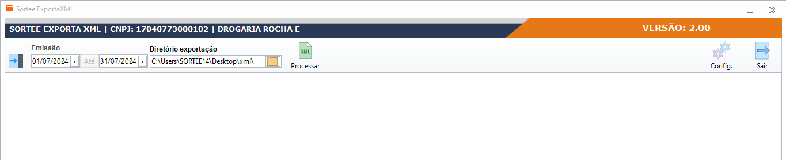
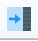
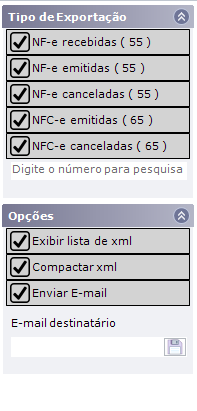
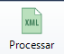
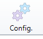
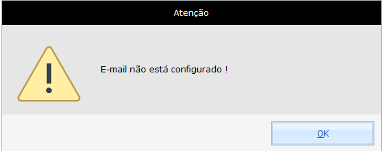
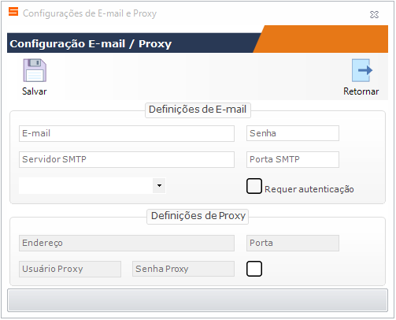

O FARMASYS possui uma ferramenta para exportar os arquivos XML gerados ou recebidos pela empresa. Para que possa exportar estes arquivos, o usuário devera seguir estes procedimentos.
Acesse o menu UTILITARIOS, clique em EXPORTA DADOS, clique em EXPORTAR XML. Irá abrir a seguinte tela:

Nesta tela o usuário poderá configurar quais os modelos de XML que deseja exportar. Para selecionar os modelos a serem exportados clique neste ícone

e será exibida uma guia para seleção.
Configurando também o período, a pasta que irá salvar os arquivos (clicando no ícone para selecionar o caminho).
No nosso exemplo a pasta foi configurada no diretório de DOCUMENTOS, e criado uma pasta com nome XML (opcional). Após selecionar o diretório, e os modelos a serem exportados, clique no ícone PROCESSAR

, para que o sistema exporte os arquivos XML na pasta selecionada.Clique no ícone

e será exibida a tela de configuração, caso não tenha e-mail configurado o sistema exibirá a seguinte mensagem:
Clique em OK e será direcionado para a tela de configuração do e-mail:

Lembrando que os dados configurados nesta tela são referentes ao e-mail interno da drogaria, pois a partir dele o sistema irá enviar os arquivos para o e-mail de destino anteriormente informado ao selecionar o campo enviar e-mail.